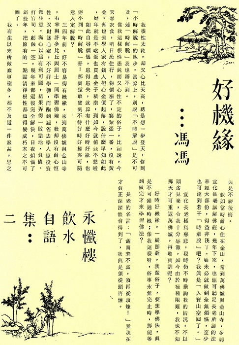

好机缘
冯冯
我根性太钝，却又心比天高，总是想一步登天，修到“不时解脱”的地步，实际上，别说“不时解脱”是不可及，连“时解脱”我也办不到。
像我这样根性愚钝而又心性不定的俗子，比如说，今天愁衣食，明日恐住行，物价涨了，穷紧张一番，没有黄金，却也去学人家有钱人担心金价起落，说什么早知如此，历年就是不吃饭也买些金子积攒，到如今就值钱不愁啦。
如此自寻烦恼，患得患失，就算有什么好时好缘，也达不到“时解脱”呀！那里还敢望到不待好时好缘亦可随意入定解脱？
三四年前，好不容易得有机缘，来到万佛城与金山寺，有幸与许多比丘与居士一同学习佛理．我却没有耐心恒性，又财迷心窍，不好好学怫，而跑到罗省去学人家投资做生意，满心以为有利可图，结果弄得一败涂地，负债、打官司、亏蚀一空，几年来都还没完全解决，日夜烦恼了这些年．把原有的一点点清净根性都烦得变成朽木之不可雕了。
我有生以来所做蠢事极多，都不及这一件蠢甚，思之真是不胜后悔。
假如当时耐心住在金山，常到万佛城与金山寺，多听宣化长老讲解佛经，几年下来，也应可听足长老所讲的法华经大部份，得益非浅了。虽未必就做到全无烦恼，至少也可达到若干“时解脱”吧？我真是“入宝山空回了。”
宣化长老极为慈悲，现时仍不时垂询我的情况，不以顽劣见弃，令我十分感激，如今由于种种阻难，我也不知那天才可重返万佛城，再聆宝训呢？
好时好机缘，一纵即逝，我辈俗子，要想学佛法，真是不可错过时机，像我这样呀，俗事永无完止时，那能等到做完才来学习佛法？
长老的名言：“觌面若不识，须再从头炼”我现在才真正深深体会得到了，我真是须从头再炼。

原载万佛城《金刚菩提海》第121期：1980年06月1日
转贴来源：万佛城《金刚菩提海》